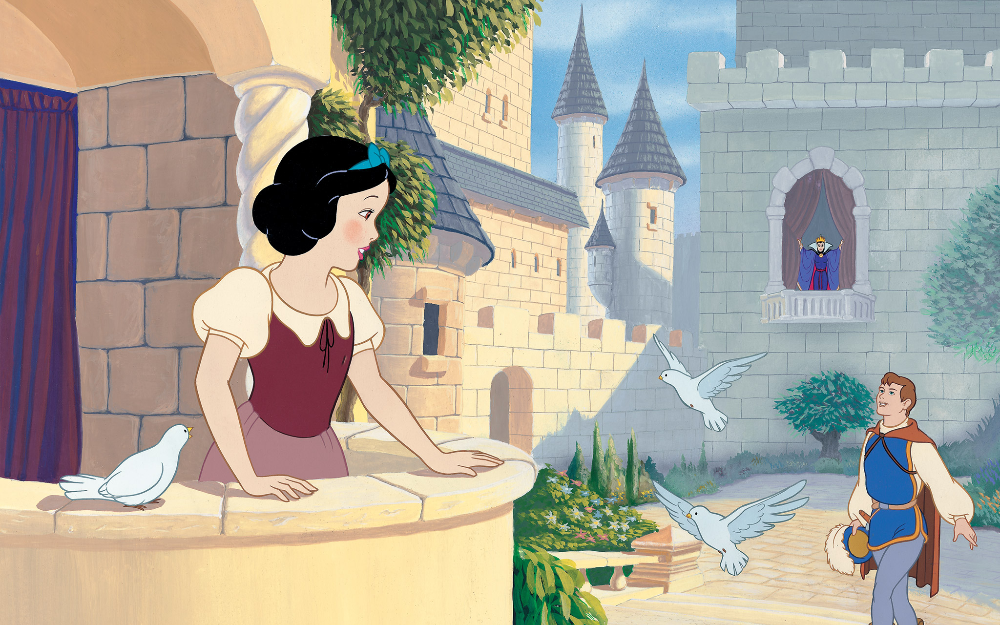

- html
- css
- javascript
My Goal 나의 목표
I'm doing some kind of coding. Cause I wanna be A BEST PROFESSTIONAL in coding area.
My think these days
Well.. Actually these days I think about people around me really could be one of my part.
Realationship, that makes me truely insane..

I'm wondering he really loves me or just he hold me to keep away from his lonelyness.
Sometimes, acutually everytime when I'm with him, I feel like I am one of his toy. Confused.